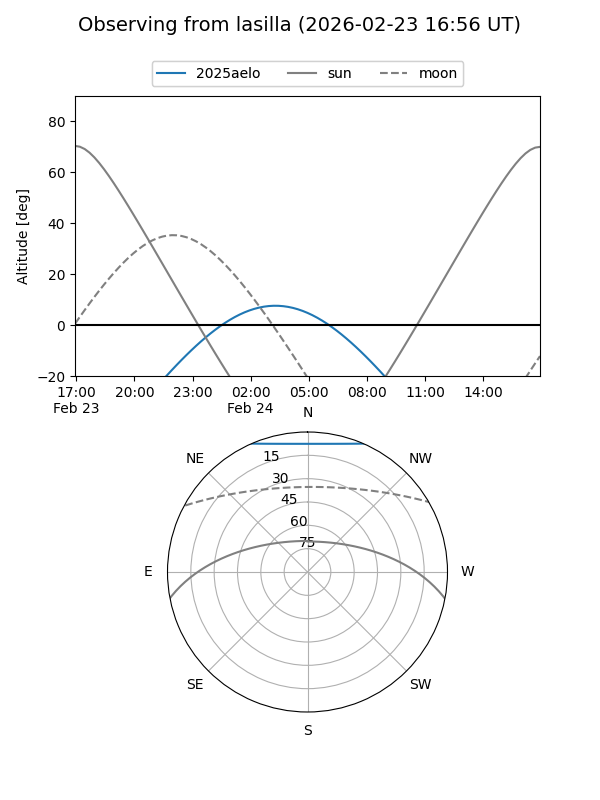
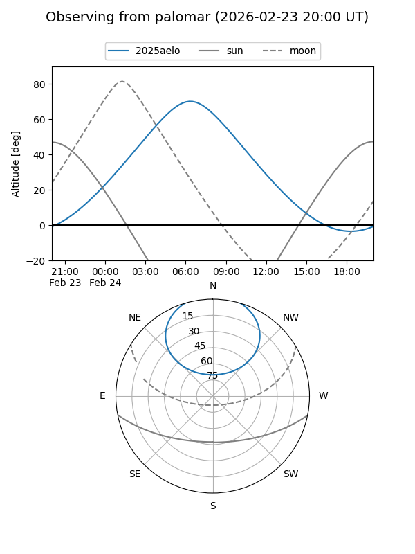

2025aelo
Target 2025aelo at 2025-12-31 16:59
Aliases and brokers:
FINK:
Lasair:
ALeRCE:
TNS:
YSE:
alt names
ZTF25acgajxh (ztf,fink_ztf)
2025aelo (tns,yse)
ATLAS25ovw (atlas)
Coordinates:
equatorial (ra, dec) = 131.9685,+53.23755
equatorial (HMS+DMS) = 08:47:52.44,+53:14:15.17
galactic (l, b) = (164.9573,+38.63983)
Flags:
Photometry:
last ztfg=20.12, ztfr=19.58
3 ztfg, 3 ztfr detections
Lightcurve

Visibility


Additional plots